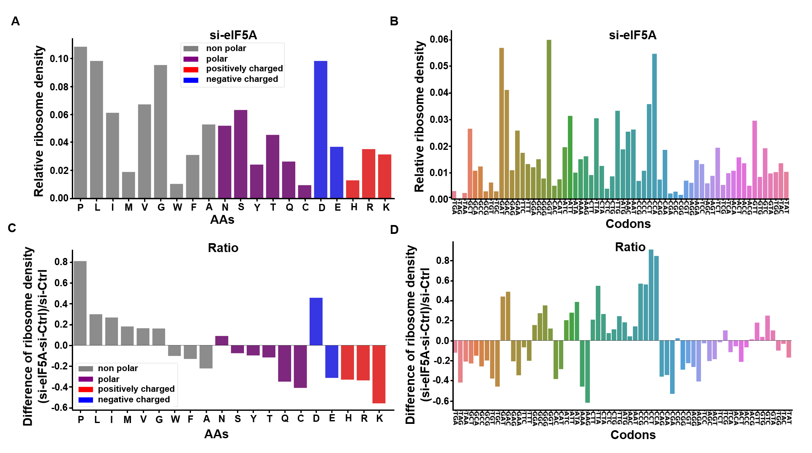
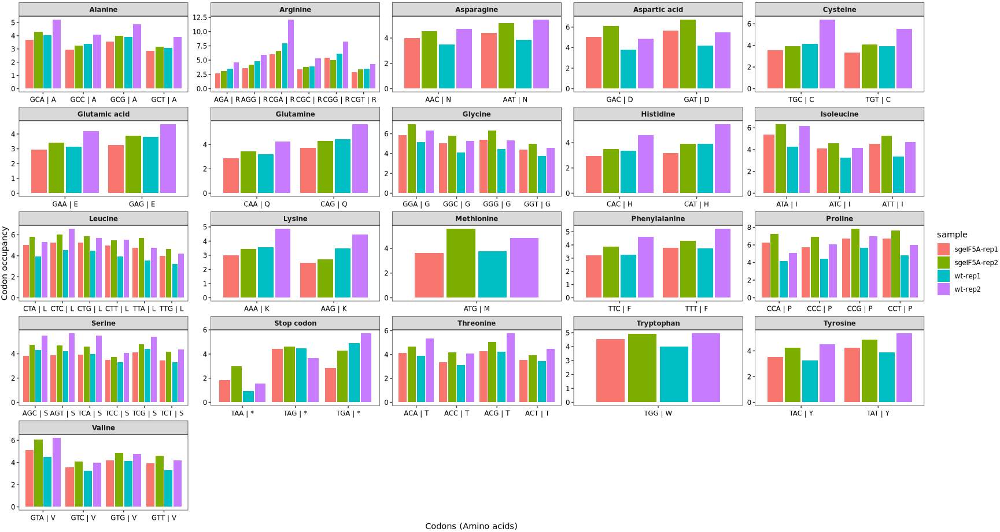
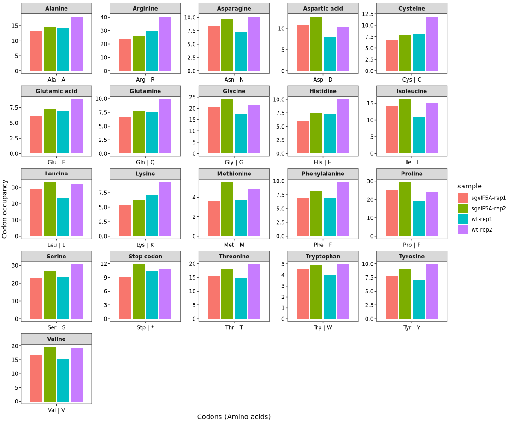
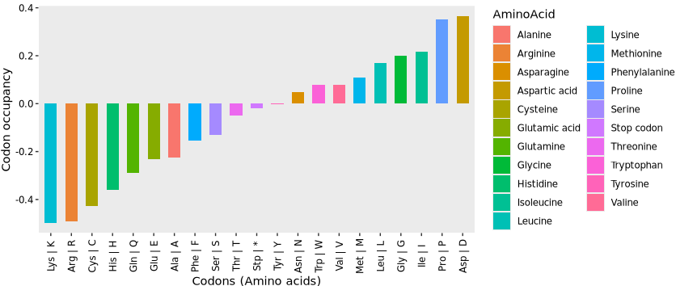
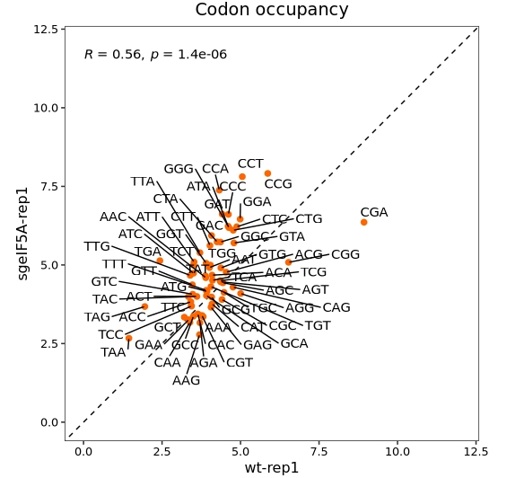
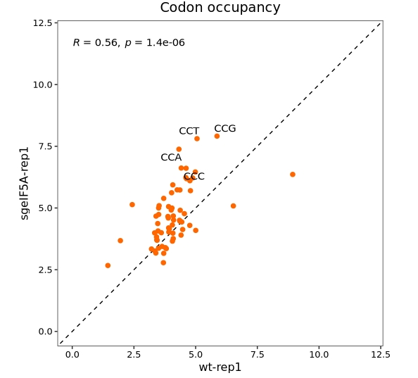
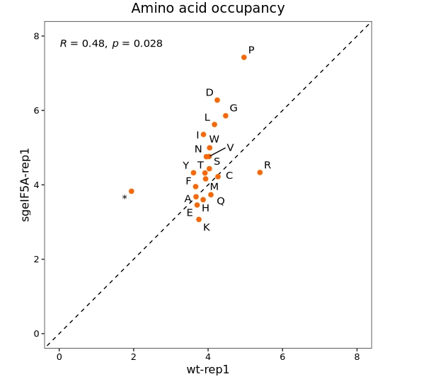

get_transcript_sequence(genome_file = "../../index-data/Saccharomyces_cerevisiae.R64-1-1.dna.toplevel.fa",
gtf_file = "../../index-data/Saccharomyces_cerevisiae.R64-1-1.112.gtf",
feature = "CDS",
output_file = "sac_cds.fa")Codon occupancy
Background
Ribosome profiling (Ribo-seq) captures snapshots of ribosome positions on mRNAs at near-codon resolution. One key metric derived from Ribo-seq data is codon occupancy—the measurement of how frequently ribosomes are found at specific codons within coding sequences (CDSs).
Codon occupancy reflects the ribosome’s dwell time at individual codons and provides insight into the kinetics of translation elongation. Longer dwell times at particular codons may indicate ribosome stalling, slow tRNA decoding, or structural hindrance of the mRNA.
Biological significance
Analyzing codon occupancy helps elucidate:
Translation elongation efficiency, potentially influenced by codon optimality and tRNA abundance
Ribosome pausing at specific motifs, such as rare codons or structured regions
Regulation of gene expression via elongation-level control
Stress responses or genetic perturbations, which may alter elongation dynamics
For example, comparing codon occupancy between wild-type and mutant conditions (e.g., a tRNA knockout) can reveal changes in translation efficiency at specific codons.
How It Works
Codon occupancy is typically calculated using E/P/A-site–assigned Ribo-seq reads. For a given \(codon_x\) occupancy is computed as:
\[ \text{Relative }Codon_x\text{ Occupancy} = \frac{\sum_{i=1}^{n} \text{Average reads at }codon_x}{n\text{(The number of codons)}} \tag{1} \]
Where:
\[ \text{Average reads at }codon_i\text{ along a trascript} = \frac{\text{Observed reads at codon}_i}{\text{Average reads per codon}} \tag{2} \]
Where:
\[ \text{Average reads per codon} = \frac{\text{Total reads along CDS}}{\text{Total length of CDS}} \tag{3} \]
This allows detection of codons that are overrepresented (slowly translated) or underrepresented (quickly passed) relative to expectation.
Applications
| Purpose | Description |
|---|---|
| Identify ribosome pause sites | Detect codons with high occupancy, indicating slow translation or stalling |
| Compare elongation between conditions | Highlight differences in translational dynamics across stress or knockout models |
| Infer tRNA availability | Codons with increased pause times may reflect low tRNA abundance or competition |
| Study translational regulation | Understand how viruses, drugs, or translation factors affect elongation rates |
Codon occupancy barplot
Codon occupancy analysis was performed by using RiboMiner, and observed a marked increase in occupancy for codons encoding the amino acids P, D, L, I, and M (Proline, Aspartic acid, Leucine, Isoleucine, and Methionine), suggesting potential ribosome pausing or elongation slowdown at these sites:

Before performing codon occupancy analysis using the codon_occupancy_plot() function from the riboTransVis package, it is necessary to extract the coding sequences (CDS) for each gene. This ensures that the function can accurately map ribosome footprints to codons.
The get_transcript_sequence() function can be used to extract CDS sequences from genome and GTF files as shown below:
Once the CDS sequences have been obtained, codon occupancy can be calculated and visualized using the codon_occupancy_plot() function from the riboTransVis package:
codon_occupancy_plot(object = obj0,
cds_fa = "./sac_cds.fa",
do_offset_correct = T)-
do_offset_correct = TRUEenables P-site offset correction to improve positional accuracy.

Setting the argument plot_abbreviation = TRUE in the codon_occupancy_plot() function will display amino acid abbreviations (single-letter codes) on the x-axis instead of individual codon sequences. This can help simplify the visualization by grouping codons by the amino acid they encode:
codon_occupancy_plot(object = obj0,
cds_fa = "./sac_cds.fa",
do_offset_correct = T,
plot_abbreviation = T)
Alternatively, instead of generating the default plot, you can set return_data = TRUE in the codon_occupancy_plot() function to extract the underlying codon occupancy data for custom plotting. Here, we use the returned data to calculate the log₂ enrichment of codon occupancy between sample groups (e.g., sgeIF5A vs. wt) at the amino acid level:
ccdf <- codon_occupancy_plot(object = obj0,
cds_fa = "./sac_cds.fa",
do_offset_correct = T,
return_data = T)
head(ccdf)
# # A tibble: 6 × 12
# sample sample_group codon_seq occup freq reloccup AminoAcid Abbreviation3 Abbreviation1 codon abbrev group
# <chr> <chr> <chr> <dbl> <int> <dbl> <chr> <chr> <chr> <chr> <chr> <chr>
# 1 sgeIF5A-rep1 sgeIF5A-rep1 AAA 112028. 37155 3.02 Lysine Lys K AAA | K Lys | K sgeIF5A
# 2 sgeIF5A-rep1 sgeIF5A-rep1 AAC 123727. 31161 3.97 Asparagine Asn N AAC | N Asn | N sgeIF5A
# 3 sgeIF5A-rep1 sgeIF5A-rep1 AAG 87373. 35449 2.46 Lysine Lys K AAG | K Lys | K sgeIF5A
# 4 sgeIF5A-rep1 sgeIF5A-rep1 AAT 176460. 40086 4.40 Asparagine Asn N AAT | N Asn | N sgeIF5A
# 5 sgeIF5A-rep1 sgeIF5A-rep1 ACA 88907. 21447 4.15 Threonine Thr T ACA | T Thr | T sgeIF5A
# 6 sgeIF5A-rep1 sgeIF5A-rep1 ACC 57954. 17177 3.37 Threonine Thr T ACC | T Thr | T sgeIF5ACustom visualization:
# plot
library(ggplot2)
ccdf$group <- sapply(strsplit(ccdf$sample,split = "\\-"),"[",1)
# log2 ratio
ccdf_aa <- ccdf %>%
dplyr::group_by(group,abbrev,AminoAcid) %>%
dplyr::summarise(reloccup = mean(reloccup)) %>%
tidyr::pivot_wider(names_from = group,values_from = reloccup) %>%
dplyr::mutate(ratio = log2(sgeIF5A/wt)) %>%
dplyr::arrange(ratio)
# order
ccdf_aa$abbrev <- factor(ccdf_aa$abbrev,levels = ccdf_aa$abbrev)
ggplot(ccdf_aa) +
geom_col(aes(x = abbrev,y = ratio,fill = AminoAcid),
position = position_dodge2(),width = 0.6) +
# theme_bw() +
theme(axis.text.x = element_text(angle = 90,vjust = 0.5),
panel.grid = element_blank(),
strip.text = element_text(face = "bold"),
axis.text = element_text(colour = "black")) +
xlab("Codons (Amino acids)") +
ylab("Codon occupancy")
Codon occupancy scatter plot
In addition to using bar plots to visualize codon occupancy, scatter plots can be employed to examine differences in codon usage between samples:
ccdf <- codon_occupancy_plot(object = obj0,
cds_fa = "./sac_cds.fa",
do_offset_correct = T,
return_data = T)
# check samples
unique(ccdf$sample)
# [1] "sgeIF5A-rep1" "sgeIF5A-rep2" "wt-rep1" "wt-rep2"
codon_scatter_plot(codon_data = ccdf,
x = "wt-rep1", y = "sgeIF5A-rep1",
type = "codon")
Highlight specific codons of interest(Pro anmino acid):
codon_scatter_plot(codon_data = ccdf,
x = "wt-rep1", y = "sgeIF5A-rep1",
type = "codon",
codon_labels = c("CCA","CCG","CCC","CCT"))
Visualize at the amino acid level:
codon_scatter_plot(codon_data = ccdf,
x = "wt-rep1", y = "sgeIF5A-rep1",
type = "amino")